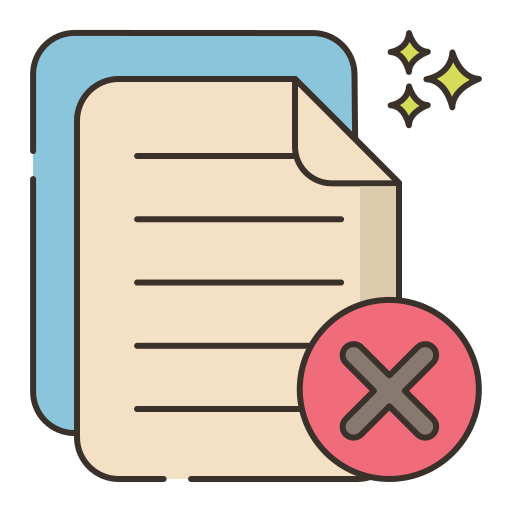

Odoo All in One Inventory Cancel App
Experience ultimate control over your stock operations with elegant simplicity — cancel and reset Stock Picking, Inventory Adjustments, Stock Moves, and Scrap Orders with ease.

Configure User Access Rights
Control who can cancel Stock, Stock Moves, and Scrap Orders.

Cancel Picking & Scrap Options
Choose Cancel, Cancel & Draft, or Cancel & Delete.

Cancel Stock Picking
Cancel Picking with Draft & Delete options.

Cancel Stock Move Options
Cancel, Draft, or Delete Stock Moves.
Cancel Stock Move
Quickly reverse Stock Moves with style.
Cancel Scrap Order
Cancel Scrap Orders with Draft & Delete.
Description
Tick the "Stock Picking Cancel Feature" to cancel stock-picking.

When you want to cancel the stock-picking only then choose the "Cancel" option.
Now we cancel picking.

Our onhand qty is now 250.00 units.

When you cancel the picking then the picking is cancelled and the state is changed to "cancelled".
After cancelled picking our onhand qty is updated.

When you want to cancel the stock-picking and reset to the draft state, tick "Cancel and Reset to
Draft".

Our stock-picking in the done state.

Our onhand qty is now 170.00 units.
When you cancel the picking then the picking is cancelled and reset to the draft.

So our state is changed to the draft state.
After cancelled picking our onhand qty is updated.

When you want to cancel & delete the stock-picking then choose the "Cancel and Delete" option.

We cancel stock-picking.
After the "Cancel" the stock-picking will be deleted.

Now we cancel multiple pickings from the tree view.
All selected pickings are cancelled.

Now we "Cancel & Reset Draft" multiple pickings from the tree view.

All selected pickings are cancelled and reset to the draft.
Now we "Cancel & Delete" multiple pickings from the tree view.
All pickings will be deleted after being cancelled.

Tick the "Stock Picking Scrap Cancel Feature" to cancel scrap orders.
When you want to cancel the scrap orders only, choose the "Cancel" option.

Our scrap order is in the "Done" state.
Our scrap order product move status is "Done".
Our on-hand quantity is now -10.00 units.
Now we cancel the scrap order.
So scrap order is canceled and the state is changed to "Cancel".
Now our scrap order product move status is "Cancelled".
After cancelled scrap order, our onhand quantity is updated.

When you want to cancel the scrap orders and reset them to the draft state, tick "Cancel and Reset to
Draft".
Our scrap order is in the "Done" state.

Our onhand quantity is now 59.00 units.

Now we cancel the scrap order.

So scrap order is cancelled and reset to the draft.

After cancelled scrap order our onhand quantity is updated.
When you want to cancel & delete the scrap orders then choose the Cancel and Delete
option.

Our scrap order is in the Done state.

Now we cancel the scrap order.

After the Cancel the scrap order will be deleted.
After cancelled scrap order our onhand qty is updated.
Tick the Cancel Stock Move to cancel stock moves.

Now we cancel multiple stock moves from the tree view.

All selected stock moves are cancelled.

Now we cancel & reset draft multiple stock moves from the tree view.

All selected stock moves are cancelled and reset to the draft.
Now we cancel & delete multiple stock moves from the tree view.
All stock moves will be deleted after being cancelled.